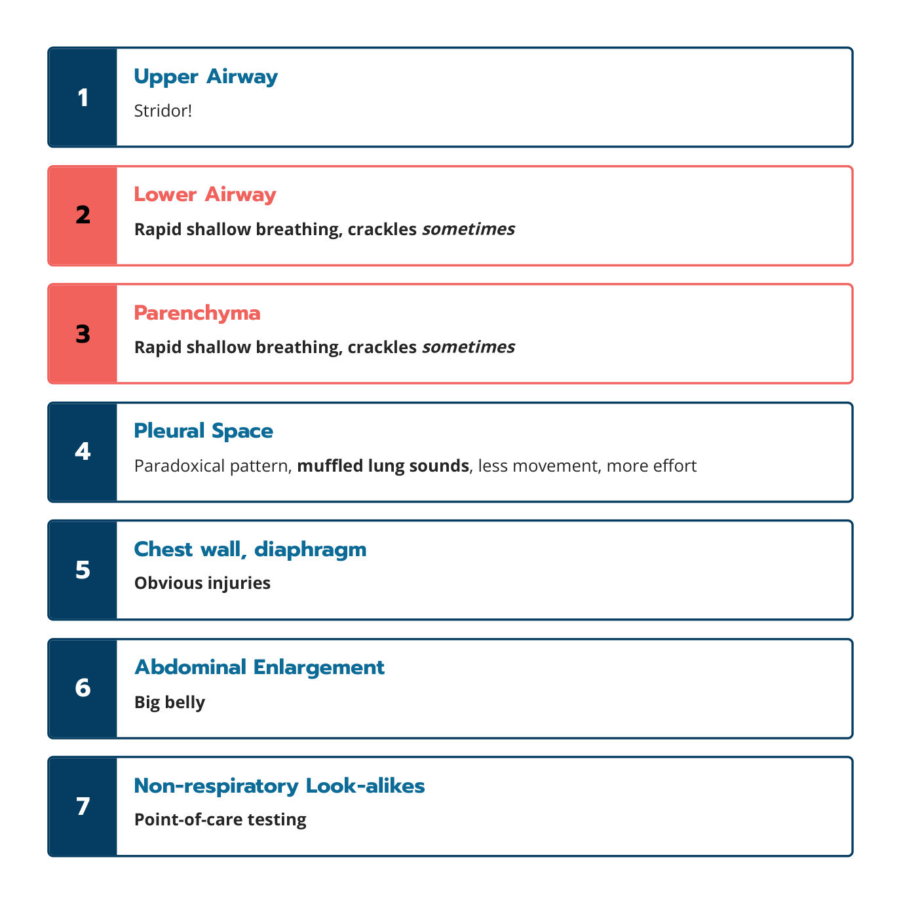

喘不過氣的貓（一）：用呼吸定位減少診斷的不確定
主講：Elise Boller, DVM, DACVECC
TSFM Annual Conference 2026｜Day 1 — The Crashing Cat｜Session 3｜場次 03
資料來源標記：
投影片（數字＝講義 PDF 頁碼）
💡 補充 整理者補充（機轉、換算、交叉參照；不是講者說的）
目前只有講義，沒有課堂錄音；講義上的影片（Vimeo）與現場投票無法收錄。
目前只有講義，沒有課堂錄音；講義上的影片（Vimeo）與現場投票無法收錄。
⭐ 必記原則
- 先定位、再診斷：把呼吸窘迫分到七個位置之一，再決定要做什麼
- 先看、再摸：在籠子裡先觀察意識、呼吸速率與用力、呼吸型態、聲音、姿勢
- 上呼吸道：吸氣性呼吸困難＋Stridor（高音調、吸氣時）——幾乎可以確定定位
- 下呼吸道：呼氣性呼吸困難、呼氣末喘鳴、咳嗽病史；爆裂音不一定代表心衰竭
- 肋膜腔：快而淺、矛盾呼吸、腹側肺音模糊
- 矛盾呼吸 → 肋膜疾病只有 66%（敏感度 90%、特異度 58%）：想到肋膜腔，但不要停在那裡
- 只有呼吸急促、沒有其他呼吸徵象 → 想非呼吸性原因（疼痛、緊迫、貧血、休克、酸中毒、高體溫……）
- 下呼吸道與肺實質最難分；不確定是正常的，不要因此不敢動——診斷跟著穩定走
學習目標與呼吸定位地圖
▾學習目標
- 辨識呼吸窘迫
- 在把緊迫降到最低的前提下定位問題
七個定位
| # | 定位 |
|---|---|
| 1 | 上呼吸道 Upper airway |
| 2 | 下呼吸道 Lower airway |
| 3 | 肺實質 Pulmonary parenchyma |
| 4 | 肋膜腔 Pleural space |
| 5 | 胸壁與橫膈 Chest wall & diaphragm |
| 6 | 腹部膨大 Abdominal enlargement |
| 7 | 非呼吸性的「看起來像」 Non-respiratory look-alikes |
1. 辨識呼吸窘迫：先看、再摸
▾怎樣算呼吸窘迫？
- 呼吸急促（tachypnea）
- 異常的呼吸型態
- 用力增加、端坐呼吸（orthopnea）
- 異常的呼吸聲
💡 補充 貓出現張口呼吸就是嚴重警訊（貓平常幾乎只用鼻子呼吸）。安靜時呼吸速率 > 40 次/分就值得注意。
先在籠子裡觀察，再去碰牠
講義附「先在籠子裡看」的影片。觀察五件事：
意識
- 清醒、焦慮或沉鬱
呼吸速率與用力
- 數一數、看腹部參與程度
呼吸型態
- 吸氣或呼氣困難？快淺？矛盾？
呼吸聲音
- Stridor、stertor、喘鳴
姿勢與端坐呼吸
- 趴著、手肘外展、頸部伸長
2. 七個定位的關鍵特徵
▾1｜上呼吸道
- 吸氣性呼吸困難
- Stridor（具診斷意義）：高音調、吸氣時
- 對照 Stertor：低音調、像打鼾（鼻咽部）
- 講義附「貓喉部檢查」影片
2｜下呼吸道
- 呼氣性呼吸困難（常見呼氣時腹部用力推）
- 呼氣末喘鳴（end-expiratory wheezes）
- ± 爆裂音；咳嗽病史
- 是一個範圍很廣的類別
喘鳴可能很難聽出來，而且聽到爆裂音不一定是心衰竭（CHF）！
3｜肺實質
- 明顯的呼吸急促
- 吸氣、呼氣都用力（混合型）
- ± 爆裂音
- 💡 例：心因性肺水腫、肺炎、肺挫傷、出血、腫瘤
4｜肋膜腔
- 快而淺的呼吸
- 矛盾呼吸型態（吸氣時胸廓擴張、腹部卻內凹）
- 腹側肺音模糊（積液）；💡 氣胸則常是背側肺音下降
Journal club：矛盾呼吸 → 想肋膜腔，但不要停在那裡
- Le Boedec 等，JAVMA 2012：389 隻呼吸困難的犬貓（其中 194 隻貓）
- 有矛盾呼吸的動物中，66% 是肋膜疾病
- 敏感度 90%、特異度 58%
💡 補充 敏感度高、特異度低的意思是：沒有矛盾呼吸時，肋膜疾病的可能性下降；但有矛盾呼吸時，還有三成多是別的問題（嚴重肺實質病、上呼吸道阻塞、橫膈疲乏等）。所以先用 POCUS 確認有沒有積液／氣胸。
5｜胸壁與橫膈
胸壁：機械性
- 胸廓活動下降
- 明顯的連枷胸（flail segment）
- 創傷病史
- 疼痛、不願呼吸
- 其他明顯原因（如繃帶綁太緊）
胸壁：功能性
- 胸廓起伏下降
- 沒有明顯創傷
- 有共病（💡 如神經肌肉疾病、低血鉀）
橫膈：機械性
- 矛盾呼吸，或
- 胸廓活動下降（💡 如橫膈疝氣）
橫膈：功能性
- （如果還有辦法）加強使用肋間肌 → 矛盾呼吸
6｜腹部膨大
- 腹部明顯膨大 → 吸氣受限 → 快而淺的呼吸
- 💡 例：大量腹水、巨大腫塊、胃擴張、懷孕末期
7｜非呼吸性的「看起來像」
特徵：呼吸急促通常是唯一的呼吸徵象。
原因
- 疼痛
- 害怕／緊迫
- 貧血
- 休克
- 代謝性酸中毒
- 高體溫
- 神經性
- 中毒
怎麼找
- 床邊檢驗（PCV/TS、血氣、乳酸、血糖、電解質）
3. 一頁總表與影片測驗
▾七個定位速查

| # | 定位 | 一句話 |
|---|---|---|
| 1 | 上呼吸道 | Stridor！ |
| 2 | 下呼吸道 | 快淺呼吸，有時有爆裂音 |
| 3 | 肺實質 | 快淺呼吸，有時有爆裂音 |
| 4 | 肋膜腔 | 矛盾呼吸、肺音模糊、胸廓活動少、用力多 |
| 5 | 胸壁、橫膈 | 明顯的外傷 |
| 6 | 腹部膨大 | 大肚子 |
| 7 | 非呼吸性 | 床邊檢驗 |
影片測驗：病灶在哪裡？
講義有三段影片讓學員定位（影片無法收錄）。講義內的影片檔名可以當作提示：
- Q1：「Upper airway obstruction cat」→ 上呼吸道阻塞
- Q2：「paradoxical grey cat with OMB」→ 矛盾呼吸＋張口呼吸，優先想肋膜腔
- Q2（續）：「severe dyspnea OMB hypersalivation」→ 嚴重呼吸困難、張口呼吸、流口水
答案是依影片檔名推測，不是講者公布的答案。
Take-home
▾參考資料
Boller E. The Cat that Can't Breathe: Minimizing Diagnostic Uncertainty With Respiratory Localization. TSFM Annual Conference 2026, Day 1 Session 3（講義 21 頁）。
Le Boedec K, et al. Relationship between paradoxical breathing and pleural diseases in dyspneic dogs and cats: 389 cases. J Am Vet Med Assoc 2012.